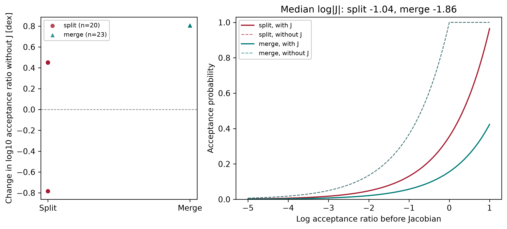
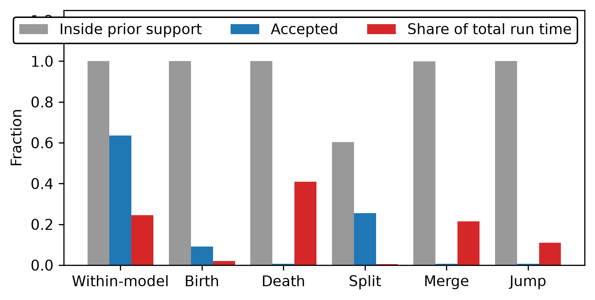
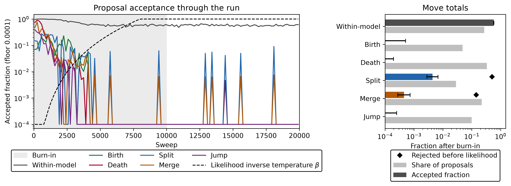
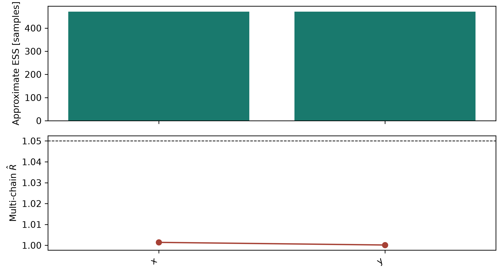
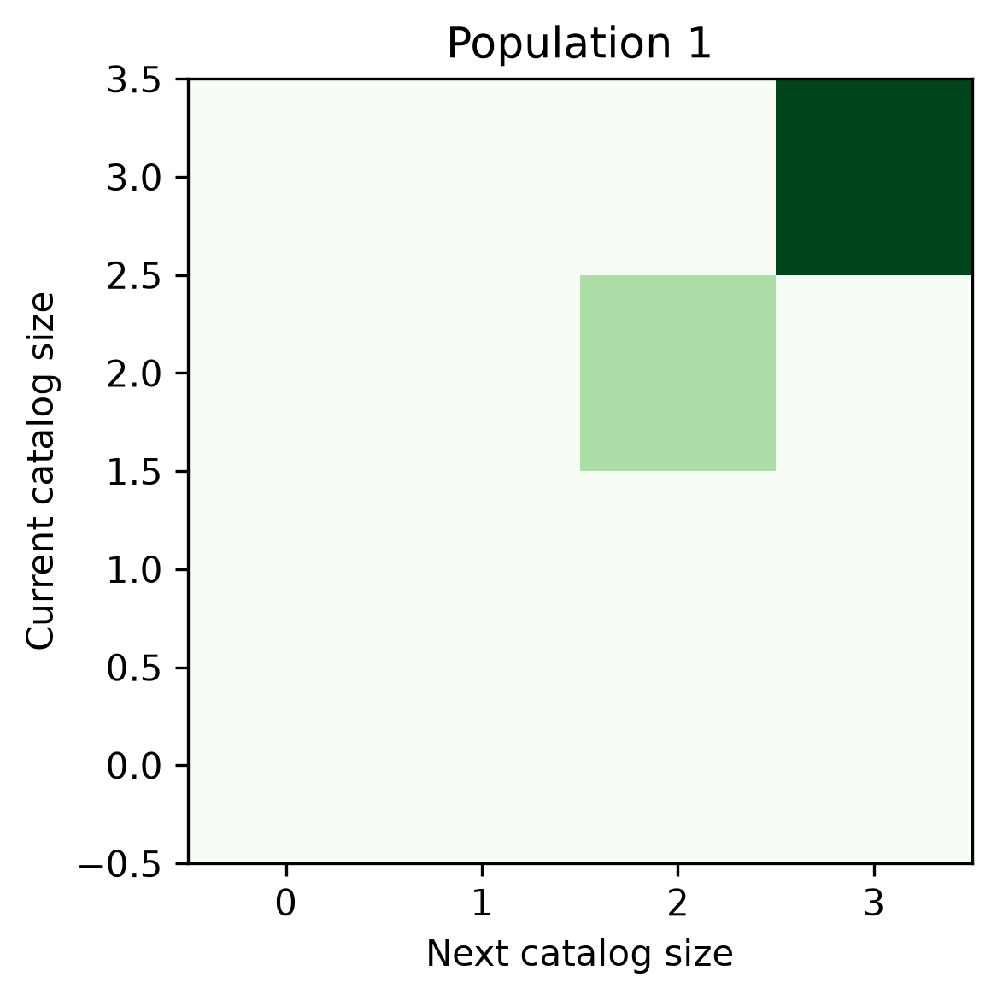

Sampling, proposals, and convergence
PCAT uses one Metropolis-Hastings sampler for inference within one model or over a metamodel. A sweep selects a proposal, evaluates its candidate state, and accepts or rejects that candidate. The realized proposal type, acceptance probability, and accept/reject result are recorded for every sweep.
Proposal types
Birth, death, split, and merge moves are available only for supported element
models. Their direction can be restricted by the model’s minimum and maximum
element counts. If split or merge is unsupported, set probspmr=0. At a
catalog boundary, PCAT selects only moves that can leave the current state.
Neural element proposals
Install the optional backend with python -m pip install 'pcat[neural]'.
Fit NeuralElementProposal on simulated observation-feature vectors and
element parameters transformed into the unit-prior cube. Each row must be one
training pair. The proposal is a conditional mixture of truncated Gaussian
density components plus a uniform component controlled by
uniform_fraction. The uniform component gives every unit-cube element
positive proposal density. The model is fitted before sampling and remains
frozen during each chain.
from pcat import NeuralElementProposal, sampling
proposal = NeuralElementProposal.fit(
condition_features,
simulated_unit_elements,
uniform_fraction=0.05,
seed=12,
)
proposal.save("analysis/neural_birth.pt")
proposal = NeuralElementProposal.load("analysis/neural_birth.pt")
result = sampling.sample(
**run_configuration,
neural_proposal_features=features_for_this_run,
probtran=0.4,
**proposal.callbacks(),
)
The run feature vector must use the same fixed-length representation and
preprocessing as the training conditions. callbacks() supplies both the
draw and normalized log-density functions required by PCAT. The Metropolis–
Hastings correction includes that density for births, deaths, and prior-redraw
jumps, along with the catalog-count prior, move-selection probabilities, and
any Jacobian. The neural proposal does not replace the catalog sampler. Validate the fitted
density and posterior recovery on held-out simulations before interpreting
efficiency comparisons.
For a proposal that depends on the live catalog, use state_callbacks() and
provide a feature builder that combines the observation features with summaries
of the supplied immutable ProposalContext. Training conditions must be
computed from simulated catalog states using that same feature builder. PCAT
evaluates a birth density at the current catalog and a death’s reverse-birth
density at the catalog after removing the proposed element. Existing
callbacks() retain their data-only behavior.
The feature builder must be a module-level, picklable callable because PCAT serializes run configurations for worker chains. For example, if the run configuration contains a fixed observation feature vector, the builder can append the current element counts:
import numpy as np
def retr_proposal_condition(gdat, context):
return np.concatenate((
gdat.neural_proposal_features,
np.asarray(context.element_counts, dtype=float),
))
state_callbacks = proposal.state_callbacks(retr_proposal_condition)
For prior-redraw jumps, the selected element is omitted from the context for both the proposed and reverse density evaluations. The default radial-velocity efficiency benchmark uses the data-only callbacks. Its short state-conditioned smoke run is described below.
When using retr_dictpcatrvel to build a radial-velocity configuration, set
boolmakepropelem=False before adding state-conditioned callbacks. That
helper otherwise installs its data-only matched-filter proposal by default.
A flat-likelihood regression uses a normalized count-conditioned proposal and
checks recovery of the configured uniform count prior over zero to three
elements. This is a controlled sampler-correctness test, not evidence of
efficiency or calibration across astronomical models. A separate 400-sweep
state-conditioned smoke run on one held-out scene failed count-posterior
agreement and is only evidence that the benchmark path executes. A completed
three-scene run with 12,000 sweeps per chain also failed the pre-specified gain
check. State-conditioned count ESS per likelihood call was 0.029 times prior
(95% scene-bootstrap interval 0.029 to 0.60) and 1.20 times data-informed
(0.11 to 1.53). Median count-posterior total variation was 0.44 from prior and
0.57 from data-informed. Neural log-likelihood R-hat was 1.35, 1.00, and 2.32
across the scenes, exceeding 1.1 in two. This is evidence against a gain for
this training setup, not a universal result. Run additional state-conditioned comparisons
with a fresh ID using
python examples/neural_proposal_efficiency/neural_proposal_efficiency.py
--proposal-conditioning state --run-id state_conditioned_efficiency_v1.
The experimental --state-feature-mode residual instead computes the
periodogram from the velocity residual after subtracting the catalog model
represented in the current context. Its one-scene smoke run checks execution
only; no performance result is established for this mode.
Acceptance probability
For a current state x and candidate x', the log Metropolis-Hastings
ratio is
where pi is the posterior density, q is the proposal density, and
J is the reversible-jump Jacobian. PCAT accepts with probability
The reflected within-model Gaussian random walk, differential-evolution proposal, and factorized Student-t proposal are symmetric in unit-prior coordinates, so their proposal-density ratio is one and their Jacobian is one. The Student-t(5) increments are scaled to have the same variance as the Gaussian step. They are independent by coordinate, including when a correlated block is selected. Birth and death moves include model-count and auxiliary-parameter corrections. Split and merge moves include reverse-move probabilities and the split Jacobian. For a prior-redraw jump, the element prior cancels its proposal density, leaving the likelihood change plus any Hastings correction for a data-informed draw.
Move |
Additional log-ratio terms |
|---|---|
Within-model Gaussian, differential-evolution, Student-t, or correlated block |
None for these symmetric proposals. Their log proposal ratio and Jacobian are zero. |
Birth or death |
Model-count and move-selection corrections, the auxiliary element draw density when it does not cancel against the prior, and any configured dimension-prior offset such as |
Split |
Reverse merge-selection probability, auxiliary-variable density, and the positive split Jacobian. For the amplitude-fraction split below, |
Merge |
Reverse split-selection probability, reverse auxiliary-variable density, and the negative split Jacobian, |
Prior-redraw jump |
The element prior cancels its proposal density. The remaining target change is the likelihood ratio. A data-informed draw adds its Hastings correction. |
The final state stores per-sweep proposal IDs in listpostindxproptype,
accept/reject flags in listpostboolpropaccp, and acceptance probabilities in
listpostaccpprob. The unclipped log acceptance ratio is stored in
listpostaccplprb so it remains available when exponentiation underflows.
Final processing also computes accpwith, accpbrth,
accpdeth, accpsplt, accpmerg, and accpjump from attempted moves.
An acceptance fraction is accepted attempts divided by attempts of that type.
Use it to tune the sampler, not as a target to maximize. Very small steps can have
high acceptance but explore the posterior slowly. Large steps can have low
acceptance and waste evaluations.
The proposal_state_animation example uses the native split/merge moves to
show the Jacobian correction. Splitting parent amplitude F into r F and
(1-r) F contributes log|J| = log(F). Merging applies its negative. The
figure compares each valid proposal’s acceptance probability while holding
every other term fixed and removing only log|J|. It uses the same proposals.


The left panel shows the log-acceptance-ratio shift for each valid proposal. The right panel shows the acceptance curve with the median Jacobian from the run and its no-Jacobian counterfactual.
The same example also animates jumps between equivalent one-parameter models
using linear amplitude A and log amplitude eta = log(A). The target
density ratio contributes A in the forward direction, while the Jacobian
contributes 1/A. Including both gives unit acceptance in either direction.
Without the Jacobian, reverse jumps accept with probability 1/A, producing
biased occupancy of the two parameterizations.



Proposal acceptance and evaluation cost in the simulated Voigt-line profiling example. The values depend on the model, prior, data, and tuning.
The proposal ledger illustrates the observed acceptance of each move type through burn-in and sampling. Within-model subproposals such as Student-t and differential-evolution are pooled under the within-model identifier.


Acceptance fractions are tuning summaries for diagnosing movement, not objectives to maximize.
Tuning proposals
probtran defaults to 0.4 when a variable population is present and
0 otherwise. It is the probability of selecting a transdimensional move.
probspmr defaults to half of probtran and sets the fraction of eligible
transdimensional selections allocated to split and merge. The remaining share
is allocated to birth and death. Split and merge directions are balanced when
both are available, with boundary restrictions taking precedence.
probjump defaults to 0.1 when a variable population is present, so
catalog runs propose within-model, birth, death, split, merge, and jump moves
by default. probdemc and probstud default to zero and must be enabled
explicitly. Both probabilities default to zero, and their sum must not exceed one.
probstud mixes in independent,
variance-matched Student-t(5) increments for the currently selected
within-model parameters. The heavy tails can help traverse separated modes but
can reduce efficiency on a locally Gaussian target. In a seeded 8,000-sweep
comparison on the bimodal example, the Student-t mixture increased mode switches
from 5 to 17 and ESS per second from 0.2 to 1.8, while on the correlated
Gaussian it reduced ESS per second from 3.9 to 2.2. These short-run results are
problem-specific, not a universal ranking.
booladaptstdp defaults to True: within-model step sizes adapt toward
their target acceptance during burn-in only, so the retained chain is an
ordinary Metropolis-Hastings chain. The pcat.plotting.plot_proposal_ledger()
view reports how often each move is proposed and accepted.
For an existing model configuration, proposal controls can be added before calling the sampler:
configuration.update(
probtran=0.7,
probspmr=0.4,
probjump=0.1,
probdemc=0.1,
probstud=0.2,
numbdemchist=1000,
booladaptstdp=True,
)
result = pcat.sampling.sample(**configuration)
Start with the model’s native proposal scales and inspect acceptance by move
type, trace behavior, model-count transitions, residuals, and effective sample
sizes. Adjust stdvpropbase or stdvpropelemfire when within-model moves
are too large or too small. Set probpropblock only when correlated blocks
and a matching proposal_correlation are configured. probdemc uses at
least ten history states before it can propose. Its default history length is
1,000, and its default scale is 2.38 / sqrt(2 d) for a d-parameter
update.
Burn-in and scale adaptation
numbburn is the number of initial sweeps excluded from retained samples. If
it is omitted, PCAT uses ten percent of numbswep. Set numbsamp or
factthin to control the number of retained samples after burn-in.
booladaptstdp=True adapts within-model proposal scales during burn-in only.
The sampler uses a target acceptance of 0.44 for one-dimensional updates and
0.234 for multivariate updates. Adaptation stops once burn-in ends. Report the
burn-in length and proposal settings with scientific results, and check that
posterior summaries are stable to a longer run or a different seed.
Set boolburntmpr=True to temper the likelihood during the first
factburntmpr fraction of burn-in. The default fraction is 0.75. At tempered
sweep s out of N tempered sweeps, PCAT uses
and evaluates the target as log_prior + beta_s * log_likelihood. The prior
is not tempered. beta_s is stored for every sweep in
listpostfacttmpr and equals one before retained sampling begins. Tempering
can help a chain cross likelihood barriers during burn-in, but it can reduce
local effective sample size and does not guarantee discovery of every mode.
typeopti="hess" estimates local finite-difference curvature to initialize
proposal scales. It does not take gradient steps or optimize the initial state.
PCAT currently offers no gradient descent burn-in mode.
The Examples page links burn_in_strategies, which compares fixed,
adaptive, tempered plus adaptive burn-in, and adaptive Student-t within-model
proposals on correlated and bimodal simulated targets. The figures below show
retained states, effective-sample performance, target-summary error, runtime,
and the tempered likelihood schedule. Their results are illustrative and
target-specific.


Automatic convergence monitoring
By default PCAT stops after repeated convergence checks, subject to the
configured sweep count as a hard maximum. Set boolcheckconv=False to use a
fixed sweep count. The defaults are numbsampconvmin=500 retained samples before the first check,
numbsampconvcheck=250 samples between checks, maxmconvrhat=1.01,
numbsampconveffc=200, and numbconvpass=2 consecutive passing checks.
For one worker PCAT estimates R-hat by splitting the chain in half. With several
workers, it calculates convergence across independent worker chains and stops
them together after they all observe the shared stop signal.
If the criterion is not met by numbswep, the run stops at that cap and
records that convergence was not reached.
Convergence is assessed using log posterior, element count, persistent element
parameters, or modeled data pixels when no persistent element parameter is
available. Inspect the values saved in gdatfinlpost and the convergence
plots. Automatic stopping does not establish that the likelihood, model, or
priors are scientifically adequate.
With posterior plotting enabled, completed runs write separate figures under
visuals/post/convergence/. Fixed-parameter figures show per-worker traces,
autocorrelation, approximate effective sample size, and cross-worker R-hat.
For transdimensional populations, the figures show catalog-size traces,
autocorrelation, occupancy, within-worker size transitions, and mixing metrics.
Early-versus-late distributions compare each sampled one-dimensional element
feature without assigning identities to elements across birth or death moves.
The approximate effective sample size uses a bounded autocorrelation window.
Short runs can yield unstable estimates. A single worker has no cross-worker
R-hat, which is shown as unavailable rather than assigned a value.
These figures show examples of the fixed-parameter ESS/R-hat summary and the catalog-size transitions used to inspect transdimensional mixing.




To create the figures from a saved posterior without rerunning inference, call
pcat.plotting.plot_posterior_convergence(state, output_directory) after
loading gdatfinlpost with pcat.main.readfile. The figures support
inspection and do not replace checks for multiple modes or model mismatch.
Animations and saved diagnostics
Set makeanim=True and numbswepplot so at least two chain frames are
saved. With frame plotting enabled, PCAT writes the usual posterior animations
from these retained chain states. It also writes proposal_activity.gif,
which shows cumulative proposal attempts and acceptances, and
proposal_sequence.gif, which labels each saved state frame with its sweep,
proposal type, and acceptance result. The sequence animation uses saved frame
intervals rather than every sweep. A rejected proposal remains represented by
the retained chain state.
Set boolmakeanimprop=True to additionally write one candidate frame for
every sweep of worker zero. PCAT renders the frame after evaluating the
candidate and acceptance probability but before an accepted candidate replaces
the current state. proposal_candidates.gif therefore shows accepted and
rejected candidates, including moves outside prior support. Each frame compares
current and candidate predictions and unit-prior coordinates and reports the
proposal type, acceptance probability, decision, log posterior values,
proposal-density ratio, and Jacobian.
Candidate frames are proposal diagnostics, not posterior samples. The option is
off by default because it performs plotting and writes one PNG per sweep. Its
runtime and storage scale linearly with numbswep. Use short runs for proposal
inspection, then disable it for production inference. The
proposal_state_animation example produces both retained-state and
every-candidate animations from the same simulated Voigt-line run.
The proposal-profiling example includes a visual comparison of acceptance and cost above and writes proposal activity with its run. See Outputs and diagnostics for the output directory and persisted diagnostics, and Capabilities for the maintained model families.